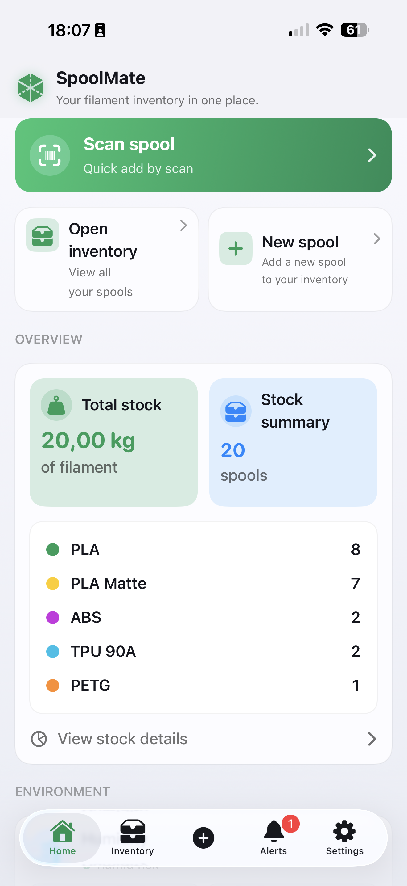
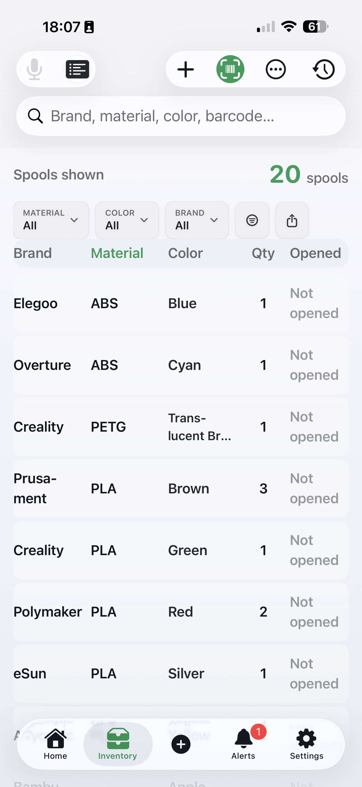
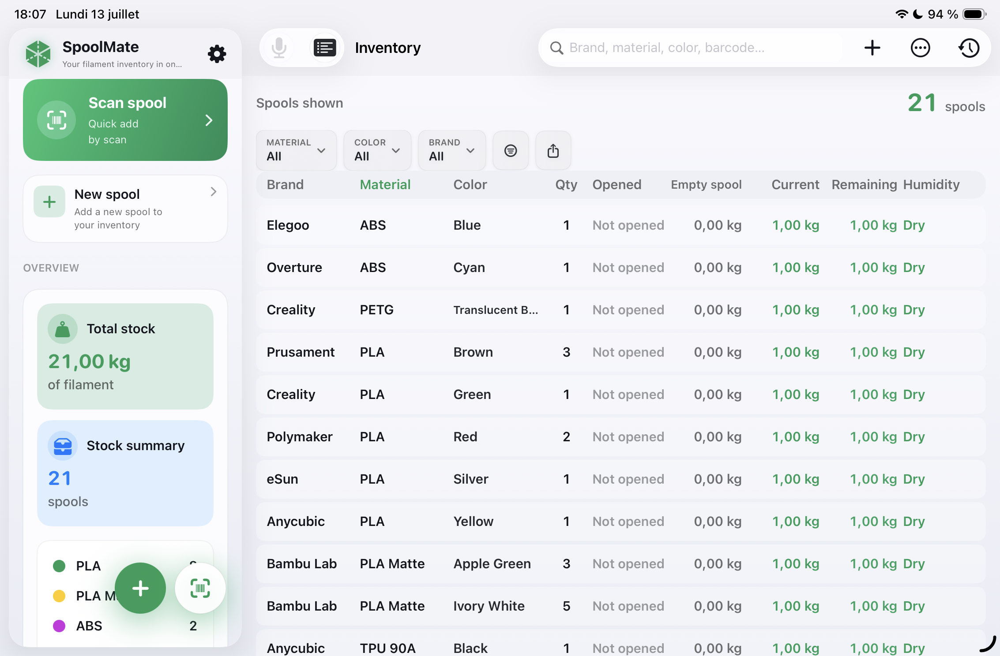
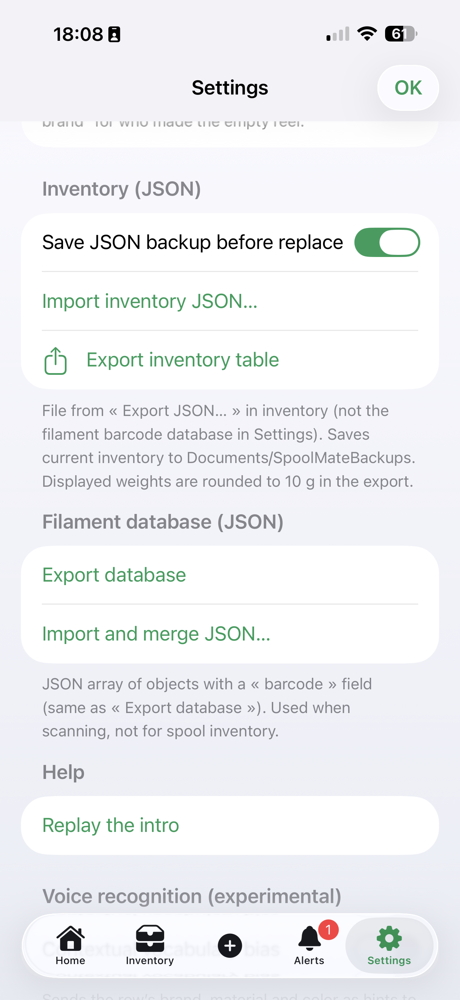

Track every spool by brand, material, color and remaining weight.

The dashboard shows your total spool count, a material breakdown, and quick buttons to scan a barcode or open your inventory.

Browse your filament as a clean list. Filter by material, color, brand, opened status, or barcode to locate the right spool instantly.

Spool Mate adapts to larger screens. On iPad you get a split view with the dashboard and a detailed inventory table side by side.

Export and import your inventory in JSON, back up before replacing data, and keep everything in sync across devices with iCloud.
A complete toolkit built for 3D printing enthusiasts.
View your spools as a clean list or a detailed table.
Find the right spool instantly.
Point your camera at a spool label.
Record total, empty, and current weight.
Update stock without typing.
Get notified before you run out.
See every spool recently added.
Undo deletions and edits.
Sync across iPhone and iPad.
Back up in CSV, TSV, or JSON.
English, French, German, Spanish.
Light, dark, and system themes.
A simple workflow to keep your inventory accurate.
Complete onboarding and see the Dashboard.
Tap + and enter details, or scan with Pro.
Switch views, filter, and search.
Tap a row and use + / − or voice.
Enter current weight after each print.
Enable reminders with a threshold.
Use the history icon in the toolbar.
Back up, sync, restore purchases.